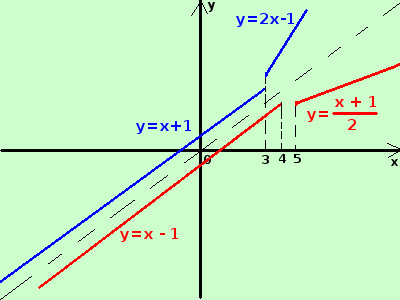

|
sviluppo Data la seguente funzione determinatene, se possibile, la funzione inversa indicandone anche le eventuali restrizioni nel dominio
E' una normalissima funzione, composta da parti diverse in intervalli diversi, utilizzeremo spesso in analisi tali funzioni "spezzate" La funzione e' definita su tutto ℜ Sia la prima parte che la seconda rappresentano delle semirette e precisamente y = x + 1 per x < 3 e' una semiretta di origine il punto (3;4) nel verso delle x decrescenti y = 2x - 1 per x ≥ 3 e' una semiretta di origine il punto (3;5) nel verso delle x crescenti trovo quindi l'inversa per le semirette: considero la prima y = x + 1 con D = {x ∈ ℜ / x < 3} il valore 3 per x corrisponde al valore 4 per y: la semiretta ha origine nel punto (3;4) per trovarne l'inversa scambio tra loro x ed y x = y + 1 ricavo la y ed ottengo y = x - 1 con D = {x ∈ ℜ / x < 4} considero la seconda y = 2x - 1 con D = {x ∈ ℜ / x ≥ 3} il valore 3 per x corrisponde al valore 5 per y: la semiretta ha origine nel punto (3;5) per trovarne l'inversa scambio tra loro x ed y  x = 2y - 1ricavo la y ed ottengo
quindi raccogliendo ottengo
con dominio D = {x ∈ ℜ / x < 4 ∪ x ≥ 5} A destra una rappresentazione grafica |